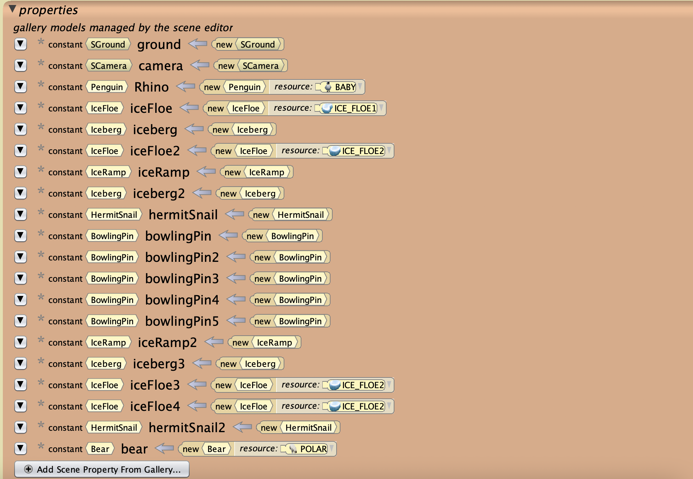
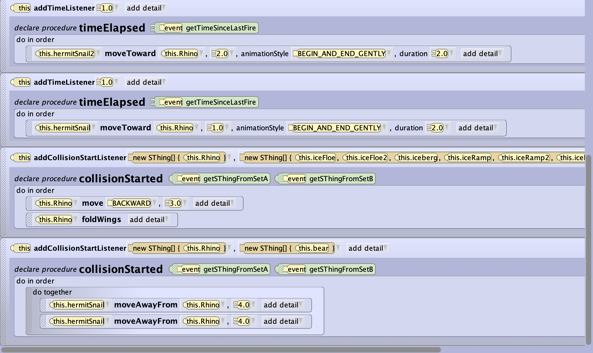
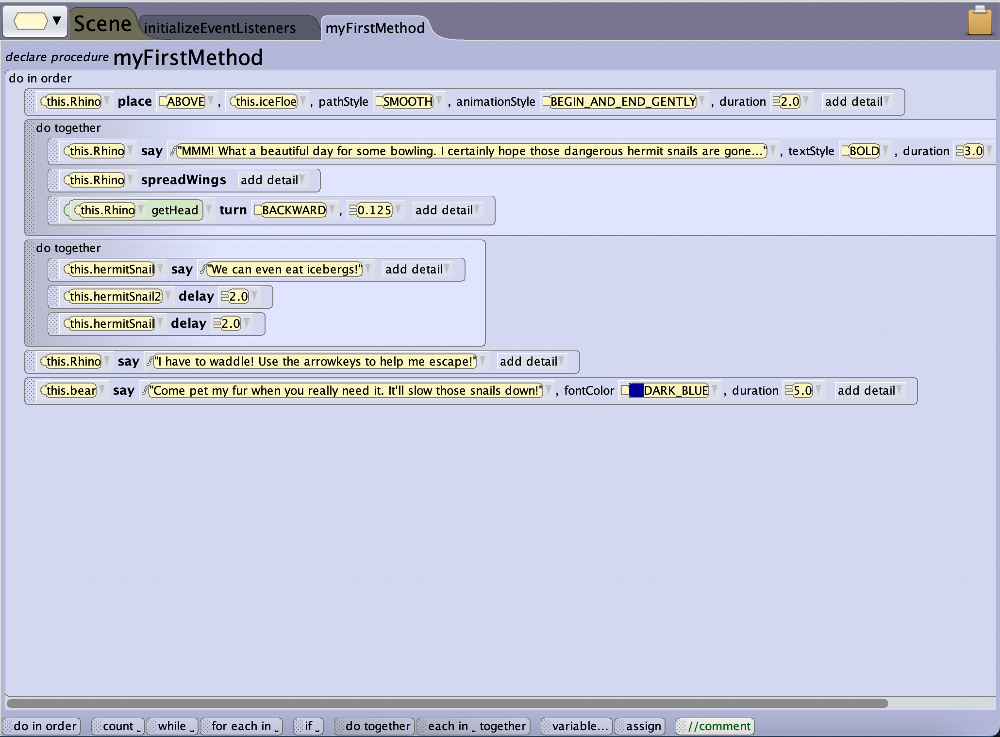

Here are some screenshots from a project made in Alice 3. You can see the poor penguin is being chased by giant hermit snails that track its movements!
Behind the Scenes:



Here are screenshots of my Scene properties, Event Listeners, and myFirstMethod tabs in Alice.